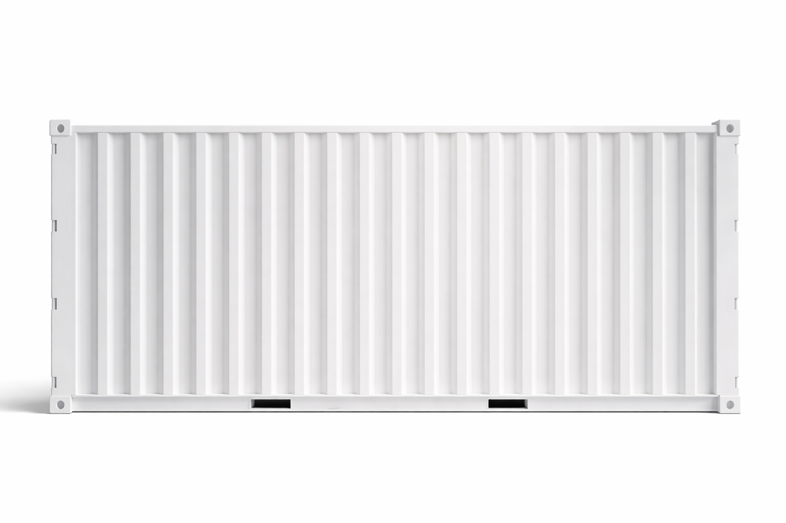

From fabric roll to finished garment — Physical AI at every step of the line. Building the operating system for autonomous garment factories.
From spreading fabric rolls to stitching the final seam — each stage depends on workers who are costly, inconsistent in quality, and increasingly hard to retain. This isn't a single-step problem. It is the entire factory floor.
Labour costs rising 5–10% annually. Every manual step is a compounding cost line that erodes margins.
Absenteeism, attrition, and skill variance make output quality unpredictable shift to shift.
AI in textiles cannot just report — it has to act. This is true at every step of the factory floor.
Every step today is manual — high cost, inconsistent labour, same problem throughout the line.
Inspections #1 and #2 are redundant by design — factories inspect twice because neither step fully works alone now.
Enter at the highest-pain point. AI inspects each cut panel and physically removes defective pieces — no report, no human interference, no waste reaching stitching.
Attack the biggest labour concentration. Robotic cells take over stitching — highest headcount, most inconsistent, hardest to retain. Starts with basic crew neck t shirts
Go upstream. One machine automates everything before the stitching cell — fabric inspection that acts, automated spreading, laser cutting. Eliminates the redundant cut panel re-inspection entirely.
Non-linear by design — we enter where ROI is highest, expand until the whole floor is automated.

The Vision
A complete autonomous garment factory — every step from fabric roll to packaged garment — running lights-out, deployable anywhere in the world in 2 weeks.
15 years garment production expertise
+
20 years AI/Computer Vision experience
For tailor-made solution
RAMCO Group deployment proves Physical AI tech at production scale
Proven deployment
Incremental additions to existing factories rather than one-point monolithic solutions
Lower barrier to adoption, progressive revenue
Technology built from ground up with patent-worthy IP
Proprietary vision-guided fabric alignment
Each stage independently profitable
NOW
Cut panel inspection AI in Pilot
3–8 MONTHS
Robotic stitching cell integration
9–15 MONTHS
Upstream automation (fabric + spreading + cutting)
MONTH 16+
Fully autonomous garment production in a container
NOW
Cut panel inspection AI in Pilot
3–8 MONTHS
Robotic stitching cell integration
9–15 MONTHS
Upstream automation (fabric + spreading + cutting)
MONTH 16+
Fully autonomous garment production in a container
We're actively meeting with investors who share conviction on Physical AI and the future of autonomous manufacturing.
All market projections and financial data are based on third-party research and internal analysis. This page is intended solely for informational purposes for prospective investors. Past deployments and traction do not guarantee future results.